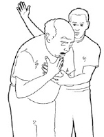
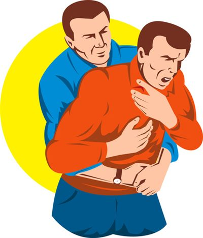
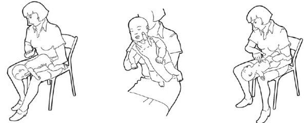

La manœuvre de Heimlich
L'etouffement
L'etouffement est un l'obstruction des voies aeriennes qui empechent completement la respiration spontanee. Il s'agit d'une urgence vitale.
Signes cliniques
La victime porte la main a sa gorge.
Elle ne peut plus parler.
Elle garde la bouche ouverte.
Elle fait des efforts pour respirer sans que l’air n’entre ni ne sorte.
Elle ne peut plus tousser.
Conduite a tenir
La victime se presente habituellement debout ou assise :
Laisser la victime dans la position oe elle se trouve.
Constater l’obstruction totale des voies aeriennes.
Desobstruer les voies aeriennes en lui donnant 5 claques dans le dos.
En cas d’inefficacite des claques dans le dos, realiser 5 compressions abdominales selon la methode de Heimlich.
Constater l’efficacite des claques dans le dos ou des compressions abdominales.
Les manœuvres de desobstruction sont efficaces
Le corps etranger peut se degager progressivement au cours des differentes tentatives ; l’efficacite de ces manœuvres peut s’evaluer sur :
L’expulsion du corps etranger.
L’apparition de toux.
La reprise de la respiration.
Apres expulsion du corps etranger, il faut parler a la victime, la reconforter et demander un avis medical aux services des urgences ou au 15.
Les manœuvres de desobstruction sont inefficaces
Recommencer les manœuvres de desobstruction.
Si la personne perd connaissance, effectuer une reanimation cardio-pulmonaire et alerter les secours d’urgence.
Les claques dans le dos
Le but des claques dans le dos de la victime est de provoquer un mouvement de toux, de debloquer et d’expulser le corps etranger qui obstrue les voies aeriennes.
Se placer sur le cete et legerement en arriere de la victime.
Soutenir son thorax avec une main et la pencher suffisamment en avant pour que l’obstacle degage sorte de la bouche plutet que de retourner dans les voies aeriennes.
Lui donner 5 claques vigoureuses dans le dos, entre les deux omoplates avec le plat de l’autre main ouverte.
Arreter les claques dans le dos des que la desobstruction est obtenue.

La methode de Heimlich : les compressions abdominales
Le but de cette manœuvre est de comprimer l’air contenu dans les poumons de la victime et d’expulser le corps etranger hors des voies aeriennes par un effet de a piston e. Suivant l’importance et la position du corps etranger, plusieurs pressions successives peuvent etre necessaires pour l’expulser.
Se placer derriere la victime, contre son dos, (en flechissant les genoux pour etre a sa hauteur si la victime est assise), passer les bras sous les siens de part et d’autre de la partie superieure de son abdomen.
S’assurer que la victime est bien penchee en avant pour que l’obstacle degage sorte de la bouche plutet que de retourner dans les voies aeriennes.
Mettre le poing sur la partie superieure de l’abdomen, au creux de l’estomac, au dessus du nombril et en dessous du sternum ; le poing doit etre horizontal, le dos de la main tourne vers le haut.
Placer l’autre main sur la premiere, les avant-bras n’appuyant pas sur les cetes.
Tirer franchement en exereant une pression vers l’arriere et vers le haut.
Le corps etranger devrait se debloquer et sortir de la bouche de la victime.
Si le corps etranger n’est pas deloge, repeter cette manœuvre jusqu’e 5 fois.
Si le corps etranger n’est pas rejete, il peut etre reste dans la bouche de la victime ; dans ce cas, il faut le rechercher et le retirer prudemment avec les doigts.

L'obstruction des voies aeriennes chez le nourisson
Si un nourrisson presente une obstruction brutale et totale des voies aeriennes par un corps etranger, il faut :
Realiser 5 claques dans le dos
Coucher le nourrisson tete penchee en avant a califourchon sur l’avant-bras, de faeon a ce que sa tete soit plus basse que le thorax et facilite la sortie du corps etranger ; maintenez la tete avec les doigts de part et d’autre de la bouche tout en evitant d’appuyer sur sa gorge.
Donner 5 claques dans le dos, entre les deux omoplates, avec le plat de la main ouverte.
Apres les 5 claques dans le dos, si le corps etranger n’a pas ete rejete, a 5 compressions thoraciques.
Realiser 5 compressions thoraciques
Apres avoir realise les 5 claques dans le dos, placer votre avant-bras contre le dos de l’enfant et votre main sur sa tete ; le nourrisson est alors entre vos deux avant bras et vos deux mains.
Le retourner sur le dos tout en le maintenant fermement ; l’allonger tete basse sur votre avant-bras et votre cuisse.
Effectuer 5 compressions sur le devant du thorax, avec 2 doigts, au milieu de la poitrine, sur la moitie inferieure du sternum, sans appuyer sur son extremite inferieure (la position des doigts est identique a celle des compressions thoraciques lors de l’arret cardiaque du nourrisson.
Apres les 5 claques dans le dos et les 5 compressions thoraciques, verifier que le corps etranger n’est pas dans la bouche ; delicatement, retirer le corps etranger s’il est visible et accessible.
Si le corps etranger est expulse, il faut parler continuellement au nourrisson pour le calmer.
Si le corps etranger n’est pas expulse : repeter le cycle successivement en alternant les claques dans le dos avec les compressions thoraciques. Faire alerter les secours d’urgence.
